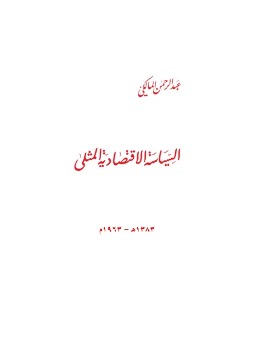

السياسة الاقتصادية المثلى
As-Siyasah al-Iqtishadiyah al-Mutsla
Baca As-Siyasah al-Iqtishadiyah al-Mutsla (السياسة الاقتصادية المثلى) karya Taqiyuddin an-Nabhani secara gratis di Maktabah Ilmu: teks Arab, Indonesia. Tanpa daftar, tanpa iklan.
Buka kitab iniLihat lemari ilmuDaftar isi
- المقدمة
- فهرس الكتاب
- السياسة الاقتصادية المثلى
- تغيير أسلوب الاستعمار
- الإبقاء على النظام الرأسمالي
- فساد النظام الرأسمالي
- فساد اشتراكية الدولة
- فساد الاشتراكية الحقيقية
- فساد ما يسمى بالعدالة الاجتماعية
- السياسة الاقتصادية المثلى
- السياسة الاقتصادية · أولاً مصادر الاقتصاد
- الزراعة
- خطأ المساواة في ملكية الأرض
- طريقة معالجة أضرار الإقطاع
- أحكام الأراضي
- الصناعة
- متى تكون المصانع ملكية عامة
- التجارة
- بيع وشراء العملات الأجنبية
- سعر الصرف
- جهد الإنسان أو الأجير
- الأساس الذي بني عليه تقدير الأجر
- لا توجد زيادات سنوية للأجراء
- لا توجد في الإسلام مشاكل عمال
- ثانياً ضمانة الحاجات الأساسية
- التأمينات الاجتماعية في الرأسمالية
- ضمانة الاشتراكية للحاجات الأساسية
- ضمانة الإسلام للحاجات الأساسية
- زيادة الثروة أو التنمية الاقتصادية
- السياسة الزراعية
- السياسة الصناعية
- تمويل المشاريع
- أخطار القروض الأجنبية
- التسهيلات الائتمانية
- الحكم الشرعي في القروض
- طريقة تمويل المشاريع الإنتاجية
- سخافة الميزانية الإنمائية
- إيجاد الأسواق الخارجية